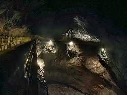
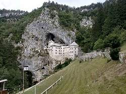

Slovenia - About the Country


Slovenia lies between Italy, Austria, Hungary and Croatia. Until World War I Slovenia belonged to the Donaumonarchie (Austro-Hungarian Empire), many places have second names in German. Later Slovenia was the northernmost state of Yugoslavia. It declared independence in 1991 and is now recognized by most other countries as an independent republic. It is capital is Ljubljana. The country still has a good opinion about the Austrian history and has very good relations with Austria and is an early member of Europe, Schengen and the Euro currency. Unfortunately they have quite expensive road fees too.
The Slovene Karst is the world’s most famous cave area! This area is the origin of most terms for karst features which are used internationally in science. Famous examples are "Karst" from Slovenian Kras, doline from Slovenian dolina=valley or polje fron Slovenian polje=field. The reason is simple: when the country and its features was first described by Johann Weichard Frh. von Valvasor in his German-language books Die Ehre Deß Hertzogthums Crain, he used the local names to describe special features. Later Austrian geologists kept those terms in further publications.
Today Slovenia has numerous tourist caves, the most spectacular cave castle, and the UNESCO World Heritage
 Skocjanske Jame.
It also has the only official Karst Institute in the World, even if you include Karst Water Institutes and geological institutes with specialization on karst it’s on of less than half a dozen.
This institute organizes a yearly conference name Karst School, which is internationally renowned.
They are also the home of the International Union of Speleology (UIS), the umbrella organisation of the speleologists.
Skocjanske Jame.
It also has the only official Karst Institute in the World, even if you include Karst Water Institutes and geological institutes with specialization on karst it’s on of less than half a dozen.
This institute organizes a yearly conference name Karst School, which is internationally renowned.
They are also the home of the International Union of Speleology (UIS), the umbrella organisation of the speleologists.
We have obviously listed the show caves, but there are also many interesting karst features which are developed for visitation, including springs, poljes, dolines, and even gorges. Concerning caves, the country has a strict protection law, and while it’s allowed to enter small caves, often on trails, it is forbidden to do real caving without a permission. Such tours are offered by some show caves though.
Slovenia is more or less comprised of two geological units, the Southern Limestone Alps and the Dinarides, both are mostly karstified limestone. Nevertheless, there are also some resources which were mined, so there are three show mines too.
Many thanks to Franc Meleckar
from the Slovenian caving club
 Jamarsko društvo Dimnice
for providing much helpful information!
Jamarsko društvo Dimnice
for providing much helpful information!
- Additional Information about Slovenia
- Karst Research Institute (visited: 13-AUG-2020)
 Index
Index Topics
Topics Hierarchical
Hierarchical Countries
Countries Maps
Maps Search
Search{kind=link}
{kind=link}